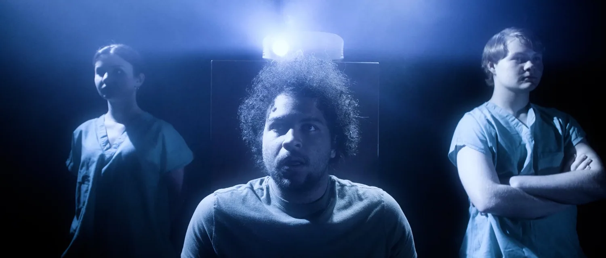

Research & analysis
01 PUBLICATION
FILM ANALYSIS · 2026
Mindglass Procedure
Memory, Grief, and the Repetition of Avoidance. A close reading of the 2025 short film, examining its imagery, narrative, ethics, and cinematic form.
Read full research article →Additional film analyses may be added to this archive over time.